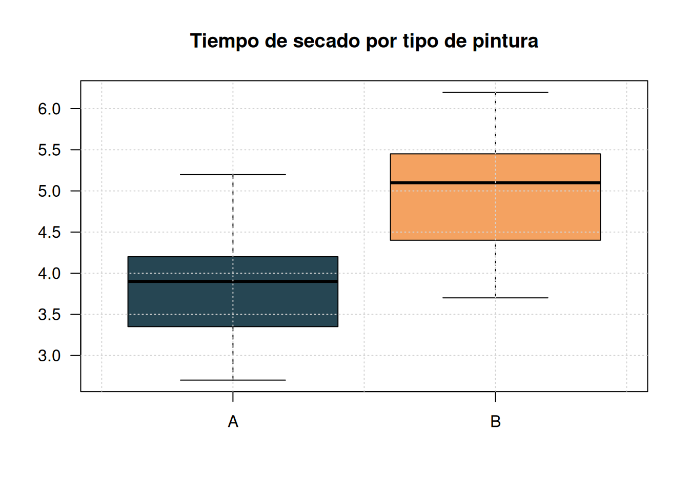

Un taller de autos considera comprar una de dos marcas diferentes de pinturas. Con el fin de determinar cúal de las marcas comprar se seleccionaron 15 tipos de pinturas de cada marca para los cuales se midió el tiempo de secado en horas, obteniendo los siguientes resultado:
A = c (3.5,2.7, 3.9, 4.2, 3.6, 2.7, 3.3, 5.2, 4.2, 2.9, 4.4, 5.2, 4.0, 4.1, 3.4)
B = c (4.7, 3.9, 4.5, 5.5, 4.0, 5.3, 4.3, 6.0, 5.2, 3.7, 5.5, 6.2, 5.1, 5.4, 4.8)
boxplot ( data.frame (A,B), col= c ("#264653", "#f4a261"), las=1, main="Tiempo de secado por tipo de pintura")
grid()
Suponga que el tiempo de secado se distribuye normal . Calcule un intervalo de confianza para la diferencia de medias e interprete su resultado. ¿Cúal marca recomendaría comprar?, justifique su respuesta.
Un artículo publicado en un diario de la ciudad afirma que una persona reduce su peso en un periodo de dos semanas un 4.5 kilogramos en oromedio con una nueva dieta, sin realizar ejercicios físicos. Con el fin de validar lo informado en el artículo un grupo de estudiantes decide realizar la dieta para lo cual registra sus pesos antes y después de dos semanas. La información recogida por 7 estudiantes es la siguiente:
peso.ant= c (58.2, 60.3, 61.3, 69.0, 64.0, 62.6, 56.7)
peso.des= c (60.0, 54.9, 58.1, 62.1, 58.5, 59.9, 54.4)Suponga que los pesos de una persona se distribuye normal. De acuerdo a la información recogida por los estudiantes se puede afirmar que lo indicado por el artículo publicado en el diario es cierto?, justufique su respuesta.
A seis ingenieros que trabajan para el estado se les solicito realizar un pronostico la tasa de inflación para el año entrante. La misma petición se le realizo a ocho especialistas en finanzas que trabajan para el sector privado. Los pronósticos entregado por los ingenieros son los siguientes: 4.2 %, 5.1 %, 3.9 %, 4.7 %, 4.8 %, 5.8 %. Por su parte los especialistas en finanzas pronosticaron: 5.7 %, 6.1 %, 5.2 %, 4.9 %, 4.6 %, 4.5 %, 5.2 %, 5.5 %. ¿Estan los especialistas (ingenieros y financieros) realizando pronósticos similares? . Suponga que los pronósticos realizados tienen distribucion normal. Construye un intervalo de confianza para la diferencia de los promedios realizados por los ingenieros y los especializadas en finanzas del 95%. Concluya a partir de los resultados
ing = c (4.2, 5.1, 3.9, 4.7, 4.8, 5.8)
fin = c (5.7, 6.1, 5.2, 4.9, 4.6, 4.5, 5.2, 5.5)Los directivos de una ensambladora de automóviles de gran tamaño están tratando de decidir si compraran neumáticos de la marca A o de la marca B para sus modelos nuevos. Con el fin de ayudarlos a tomar una decisión se realiza un experimento en el que se usan 12 neumáticos de cada marca. Los neumáticos se utilizan hasta que se desgastan completamente. Los resultados son los siguientes:
A= c ( 55145, 58026, 58795, 54660, 61153, 56969, 61764, 59094, 60456, 54557, 52484, 59600)
B= c (60970, 62409, 60546, 58508, 58974, 56682, 59483, 58048, 73107, 61977, 55974, 58522)¿Que marca de neumáticos escogería entre las dos opciones de acuerdo a la anterior informacion? Suponga que las poblaciones se distribuyen de forma aproximadamente normal .
Un estudio realizado por MasterCard revelo que 131 de las 468 mujeres que efectuaron compras en almacén lo hicieron utilizando la tarjeta de crédito propia del almacén, mientras que 57 de 237 hombres utilizaron la misma tarjeta para sus compras en el almacén. ¿ Existe evidencia suficiente en los datos que permita concluir que la proporción de mujeres es mayor que la proporción de hombres que utilizan la tarjeta de crédito propia del almacén para realizar sus compras?
El gerente de un restaurante deseas determinar el tamaño de muestra necesario para estimar la proporción de clientes satisfechos con un nivel de confianza del 95% y un error máximo permitido del 5%. Para ello, ha realizado una prueba piloto de un nuevo menú para medir la satisfacción de los clientes. En la prueba piloto, encuestaste a 100 clientes y descubriste que el 75 de ellos estaban satisfechos con la comida. ¿Qué tamaño de muestra deberá tener el estudio